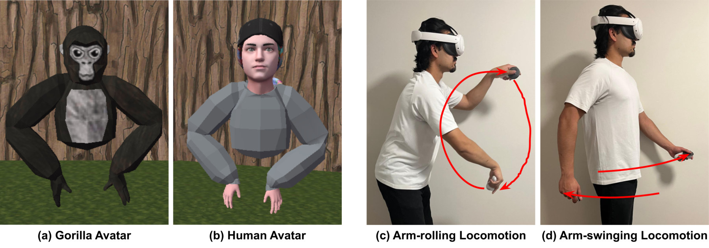

Abstract
As virtual reality (VR) continues to expand, particularly in social VR platforms and immersive gaming environments, understanding the factors that shape user experience is becoming increasingly important. Avatars and locomotion methods play central roles in influencing how users identify with their virtual representations and navigate virtual spaces. Despite extensive research on these elements individually, their relationship remains underexplored. In particular, little is known about how congruence between avatar appearance and locomotion method affects user perceptions. This study investigates the impact of avatar-locomotion congruence on user experience and avatar identification in VR. We conducted a within-subjects experiment with 30 participants, employing two visually distinct avatar types (human and gorilla) and two locomotion methods (human-like arm-swinging and gorilla-like arm-rolling), to assess their individual and combined effects. Our results indicate that congruence between avatar appearance and locomotion method enhances both avatar identification and user experience. These findings contribute to the understanding of the relationship between avatars and locomotion in VR, with potential applications in enhancing user experience in immersive gaming, social VR, and gamified remote physical therapy.